Physics Homework 9 DC and RC circuits · Worked solutions
All 10 assigned questions, including supplemental question 25.59. Setup, substitution and final answers.
26.3 26.6 26.8 26.21 26.24 26.28 26.39 26.43 26.51 25.59 Print / Save PDF Question 126.3 · Adding a series resistor A 25.0 Ω resistor dissipates 36.0 W on an ideal battery. Add 15.0 Ω in series. Find total power after the change.
Original question 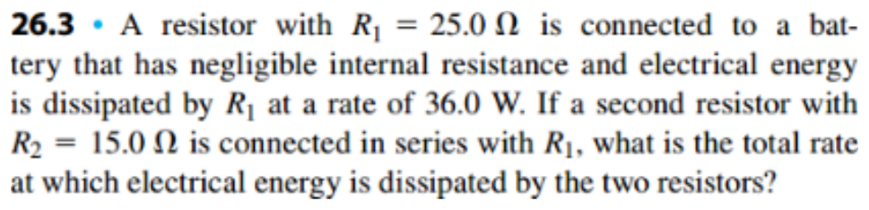
Open the original D2L handout The battery voltage stays fixed; the current does not.
Recover the battery voltage P 1 = V 2 R 1 ⇒ V = P 1 R 1 = ( 36.0 ) ( 25.0 ) = 30.0 V \begin{gathered}P_1=\frac{V^2}{R_1}\quad\Rightarrow\quad V=\sqrt{P_1R_1}=\sqrt{(36.0)(25.0)}=30.0\ \mathrm V\end{gathered} P 1 = R 1 V 2 ⇒ V = P 1 R 1 = ( 36.0 ) ( 25.0 ) = 30.0 V Find the new total power R e q = 25.0 + 15.0 = 40.0 Ω I = 30.0 40.0 = 0.750 A P = V 2 R e q = 30.0 2 40.0 = 22.5 W \begin{gathered}R_{eq}=25.0+15.0=40.0\ \Omega\\I=\frac{30.0}{40.0}=0.750\ \mathrm A\\P=\frac{V^2}{R_{eq}}=\frac{30.0^2}{40.0}=22.5\ \mathrm W\end{gathered} R e q = 25.0 + 15.0 = 40.0 Ω I = 40.0 30.0 = 0.750 A P = R e q V 2 = 40.0 30. 0 2 = 22.5 W Adding series resistance reduces total power for a fixed-voltage source.
Question 226.6 · Find the source from an ammeter 45 Ω and 35 Ω are in series with a parallel group: 25 Ω (ammeter branch), 15 Ω, and (15 Ω + 10 Ω). Ideal ammeter reads 1.25 A; voltmeter spans 45 Ω. Find voltmeter reading and battery emf.
Original question 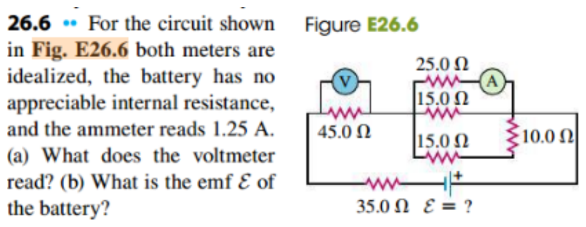
Open the original D2L handout 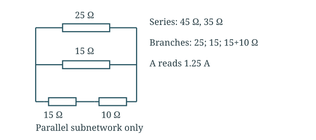
The ammeter fixes the shared parallel voltage.
Find the voltage across the parallel group V p = I 25 R 25 = ( 1.25 ) ( 25.0 ) = 31.25 V \begin{gathered}V_p=I_{25}R_{25}=(1.25)(25.0)=31.25\ \mathrm V\end{gathered} V p = I 25 R 25 = ( 1.25 ) ( 25.0 ) = 31.25 V Add the branch currents I 15 = 31.25 15.0 = 2.0833 A I 15 + 10 = 31.25 15.0 + 10.0 = 1.25 A I t o t a l = 1.25 + 2.0833 + 1.25 = 4.5833 A \begin{gathered}I_{15}=\frac{31.25}{15.0}=2.0833\ \mathrm A\\I_{15+10}=\frac{31.25}{15.0+10.0}=1.25\ \mathrm A\\I_{total}=1.25+2.0833+1.25=4.5833\ \mathrm A\end{gathered} I 15 = 15.0 31.25 = 2.0833 A I 15 + 10 = 15.0 + 10.0 31.25 = 1.25 A I t o t a l = 1.25 + 2.0833 + 1.25 = 4.5833 A Find the meter reading and emf V 45 = ( 4.5833 ) ( 45.0 ) = 206.25 V E = I t o t a l ( 45.0 + 35.0 ) + V p = ( 4.5833 ) ( 80.0 ) + 31.25 = 397.92 V \begin{gathered}V_{45}=(4.5833)(45.0)=206.25\ \mathrm V\\\mathcal E=I_{total}(45.0+35.0)+V_p\\=(4.5833)(80.0)+31.25=397.92\ \mathrm V\end{gathered} V 45 = ( 4.5833 ) ( 45.0 ) = 206.25 V E = I t o t a l ( 45.0 + 35.0 ) + V p = ( 4.5833 ) ( 80.0 ) + 31.25 = 397.92 V Final answer Voltmeter ≈ 206 V; battery emf ≈ 398 V.
The lower 15 Ω and 10 Ω are in series; treating all four resistors as parallel gives a wrong source voltage.
Question 326.8 · Three resistors in parallel Resistors 1.60 Ω, 2.40 Ω and 4.80 Ω connect in parallel to an ideal 28.0 V battery. Find equivalent resistance, branch currents, total current, branch voltages and powers.
Original question 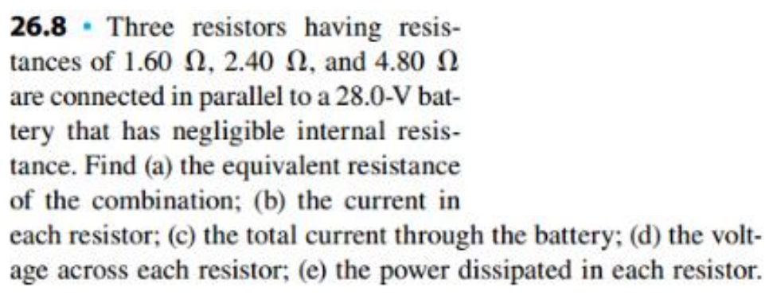
Open the original D2L handout 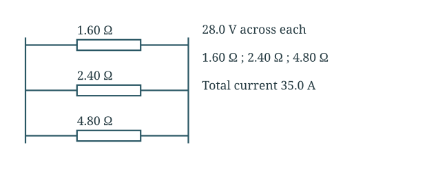
Every branch receives the same battery voltage. Ignore the unrelated image printed beside this question.
Combine the resistors 1 R e q = 1 1.60 + 1 2.40 + 1 4.80 = 1.25 Ω − 1 R e q = 0.800 Ω \begin{gathered}\frac1{R_{eq}}=\frac1{1.60}+\frac1{2.40}+\frac1{4.80}=1.25\ \Omega^{-1}\\R_{eq}=0.800\ \Omega\end{gathered} R e q 1 = 1.60 1 + 2.40 1 + 4.80 1 = 1.25 Ω − 1 R e q = 0.800 Ω Find each current and voltage V 1 = V 2 = V 3 = 28.0 V I 1 = 28.0 / 1.60 = 17.5 A I 2 = 28.0 / 2.40 = 11.7 A I 3 = 28.0 / 4.80 = 5.83 A I t o t a l = 28.0 / 0.800 = 35.0 A \begin{gathered}V_1=V_2=V_3=28.0\ \mathrm V\\I_1=28.0/1.60=17.5\ \mathrm A\\I_2=28.0/2.40=11.7\ \mathrm A\\I_3=28.0/4.80=5.83\ \mathrm A\\I_{total}=28.0/0.800=35.0\ \mathrm A\end{gathered} V 1 = V 2 = V 3 = 28.0 V I 1 = 28.0/1.60 = 17.5 A I 2 = 28.0/2.40 = 11.7 A I 3 = 28.0/4.80 = 5.83 A I t o t a l = 28.0/0.800 = 35.0 A Find the powers P 1 = 28.0 2 / 1.60 = 490 W P 2 = 28.0 2 / 2.40 = 327 W P 3 = 28.0 2 / 4.80 = 163 W P t o t a l = V I t o t a l = ( 28.0 ) ( 35.0 ) = 980 W \begin{gathered}P_1=28.0^2/1.60=490\ \mathrm W\\P_2=28.0^2/2.40=327\ \mathrm W\\P_3=28.0^2/4.80=163\ \mathrm W\\P_{total}=VI_{total}=(28.0)(35.0)=980\ \mathrm W\end{gathered} P 1 = 28. 0 2 /1.60 = 490 W P 2 = 28. 0 2 /2.40 = 327 W P 3 = 28. 0 2 /4.80 = 163 W P t o t a l = V I t o t a l = ( 28.0 ) ( 35.0 ) = 980 W Final answer 0.800 Ω; 17.5, 11.7, 5.83 A; total 35.0 A; each 28 V; 490, 327, 163 W.
Branch currents sum to 35.0 A and powers sum to VI = 980 W.
Question 426.21 · Brightness in series and parallel Treat two bulbs as constant resistances 400 Ω and 800 Ω, supplied by 120 V. For series and parallel, find currents, powers, total power and relative brightness.
Original question 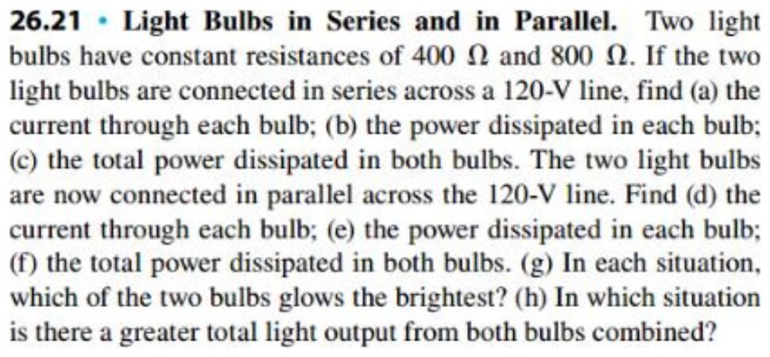
Open the original D2L handout 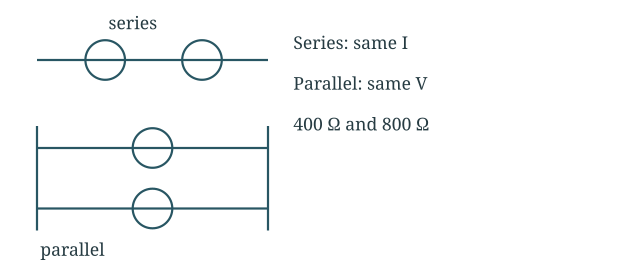
Series shares current; parallel shares voltage. Brightness follows power in this model.
Series connection I 1 = I 2 = 120 400 + 800 = 0.100 A P 1 = I 2 R 1 = ( 0.100 ) 2 ( 400 ) = 4.00 W P 2 = ( 0.100 ) 2 ( 800 ) = 8.00 W P s e r i e s = 4.00 + 8.00 = 12.0 W \begin{gathered}I_1=I_2=\frac{120}{400+800}=0.100\ \mathrm A\\P_1=I^2R_1=(0.100)^2(400)=4.00\ \mathrm W\\P_2=(0.100)^2(800)=8.00\ \mathrm W\\P_{series}=4.00+8.00=12.0\ \mathrm W\end{gathered} I 1 = I 2 = 400 + 800 120 = 0.100 A P 1 = I 2 R 1 = ( 0.100 ) 2 ( 400 ) = 4.00 W P 2 = ( 0.100 ) 2 ( 800 ) = 8.00 W P ser i es = 4.00 + 8.00 = 12.0 W Parallel connection I 1 = 120 / 400 = 0.300 A , I 2 = 120 / 800 = 0.150 A P 1 = 120 2 / 400 = 36.0 W P 2 = 120 2 / 800 = 18.0 W P p a r a l l e l = 36.0 + 18.0 = 54.0 W \begin{gathered}I_1=120/400=0.300\ \mathrm A,\quad I_2=120/800=0.150\ \mathrm A\\P_1=120^2/400=36.0\ \mathrm W\\P_2=120^2/800=18.0\ \mathrm W\\P_{parallel}=36.0+18.0=54.0\ \mathrm W\end{gathered} I 1 = 120/400 = 0.300 A , I 2 = 120/800 = 0.150 A P 1 = 12 0 2 /400 = 36.0 W P 2 = 12 0 2 /800 = 18.0 W P p a r a l l e l = 36.0 + 18.0 = 54.0 W Final answer Series: 12 W total, 800 Ω brighter. Parallel: 54 W total, 400 Ω brighter.
800 Ω is brighter in series; 400 Ω is brighter in parallel. Parallel gives greater combined output under the stated constant-resistance model.
Question 526.24 · Two ideal sources Three branches connect top/bottom nodes: a 10.0 V source (+ on top), a 30.0 Ω resistor, and a 20.0 Ω resistor above a 5.00 V source (+ on top). Find current through each resistor and the 10 V battery.
Original question 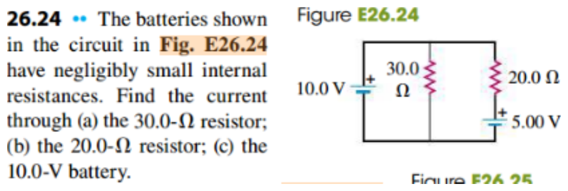
Open the original D2L handout 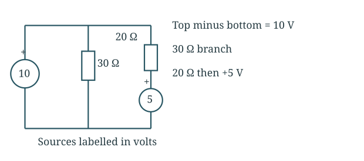
The 10 V source fixes top-minus-bottom potential.
Use the node voltage V t o p − V b o t t o m = 10.0 V I 30 = 10.0 30.0 = 0.333 A downward 10.0 − I 20 ( 20.0 ) − 5.00 = 0 I 20 = 10.0 − 5.00 20.0 = 0.250 A downward \begin{gathered}V_{top}-V_{bottom}=10.0\ \mathrm V\\I_{30}=\frac{10.0}{30.0}=0.333\ \mathrm A\quad\text{downward}\\10.0-I_{20}(20.0)-5.00=0\\I_{20}=\frac{10.0-5.00}{20.0}=0.250\ \mathrm A\quad\text{downward}\end{gathered} V t o p − V b o tt o m = 10.0 V I 30 = 30.0 10.0 = 0.333 A downward 10.0 − I 20 ( 20.0 ) − 5.00 = 0 I 20 = 20.0 10.0 − 5.00 = 0.250 A downward Apply the junction rule I 10 V = I 30 + I 20 = 0.3333 + 0.250 = 0.583 A upward \begin{gathered}I_{10V}=I_{30}+I_{20}=0.3333+0.250=0.583\ \mathrm A\quad\text{upward}\end{gathered} I 10 V = I 30 + I 20 = 0.3333 + 0.250 = 0.583 A upward Final answer 30 Ω: 0.333 A down; 20 Ω: 0.250 A down; 10 V source: 0.583 A up.
The smaller battery is being charged. Junction current is conserved: 0.583 = 0.333 + 0.250.
Question 626.28 · Three-branch circuit and node voltage Top branch left→right: 2 Ω, 10 V source (+ left), point a, 3 Ω. Middle: 1 Ω, 5 V source (+ left), point b, 4 Ω. Bottom: 10 Ω. Find branch currents and Vₐ − Vᵦ. Do only 26.28.
Original question 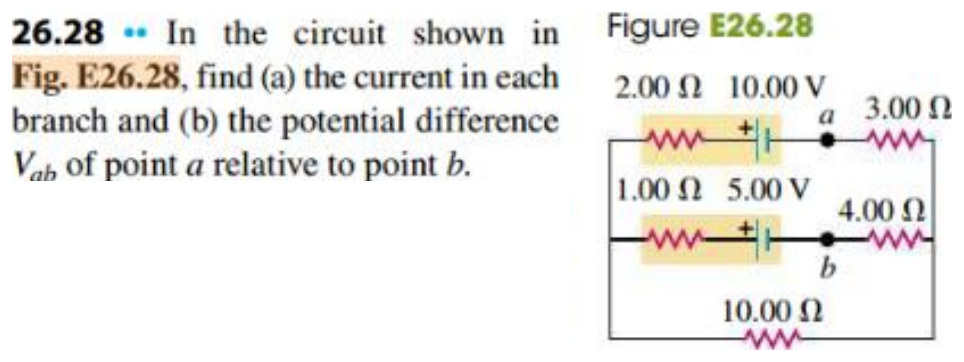
Open the original D2L handout 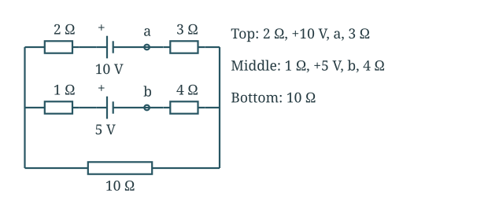
Assign all branch currents left-to-right; negative results reverse direction.
Write the three branch currents D = V L − V R I t = D − 10 2 + 3 , I m = D − 5 1 + 4 , I b = D 10 \begin{gathered}D=V_L-V_R\\I_t=\frac{D-10}{2+3},\quad I_m=\frac{D-5}{1+4},\quad I_b=\frac D{10}\end{gathered} D = V L − V R I t = 2 + 3 D − 10 , I m = 1 + 4 D − 5 , I b = 10 D Solve the junction equation I t + I m + I b = 0 2 ( D − 10 ) + 2 ( D − 5 ) + D = 0 5 D = 30 ⇒ D = 6.00 V I t = ( 6 − 10 ) / 5 = − 0.800 A I m = ( 6 − 5 ) / 5 = 0.200 A , I b = 6 / 10 = 0.600 A \begin{gathered}I_t+I_m+I_b=0\\2(D-10)+2(D-5)+D=0\\5D=30\quad\Rightarrow\quad D=6.00\ \mathrm V\\I_t=(6-10)/5=-0.800\ \mathrm A\\I_m=(6-5)/5=0.200\ \mathrm A,\quad I_b=6/10=0.600\ \mathrm A\end{gathered} I t + I m + I b = 0 2 ( D − 10 ) + 2 ( D − 5 ) + D = 0 5 D = 30 ⇒ D = 6.00 V I t = ( 6 − 10 ) /5 = − 0.800 A I m = ( 6 − 5 ) /5 = 0.200 A , I b = 6/10 = 0.600 A Compare the two marked points V a − V R = ( 3 ) ( − 0.800 ) = − 2.40 V V b − V R = ( 4 ) ( 0.200 ) = 0.800 V V a − V b = − 2.40 − 0.800 = − 3.20 V \begin{gathered}V_a-V_R=(3)(-0.800)=-2.40\ \mathrm V\\V_b-V_R=(4)(0.200)=0.800\ \mathrm V\\V_a-V_b=-2.40-0.800=-3.20\ \mathrm V\end{gathered} V a − V R = ( 3 ) ( − 0.800 ) = − 2.40 V V b − V R = ( 4 ) ( 0.200 ) = 0.800 V V a − V b = − 2.40 − 0.800 = − 3.20 V Currents are positive from left to right. A negative top-branch current means 0.800 A flows from right to left.
Final answer Top 0.800 A right→left; middle 0.200 A and bottom 0.600 A left→right; Vab = −3.20 V.
Therefore Vab = −3.20 V. Both positive battery terminals are on the left; the polarity-reversal question 26.29 is excluded.
Question 726.39 · Voltmeter discharges a capacitor Initially V₀ = 12.0 V. A 3.40 MΩ voltmeter reads 3.0 V after 4.00 s. Find capacitance and time constant.
Original question 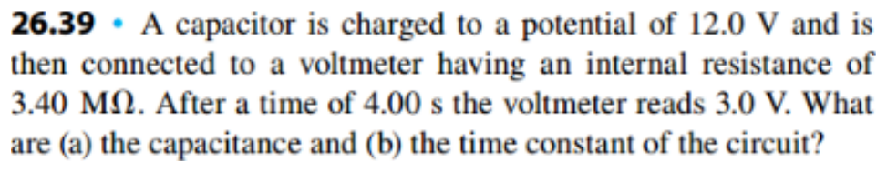
Open the original D2L handout The voltmeter itself supplies the discharge path.
Solve the discharge equation V = V 0 e − t / τ ⇒ ln ( V 0 / V ) = t / τ τ = 4.00 ln ( 12.0 / 3.0 ) = 2.8854 s \begin{gathered}V=V_0e^{-t/\tau}\quad\Rightarrow\quad\ln(V_0/V)=t/\tau\\\tau=\frac{4.00}{\ln(12.0/3.0)}=2.8854\ \mathrm s\end{gathered} V = V 0 e − t / τ ⇒ ln ( V 0 / V ) = t / τ τ = ln ( 12.0/3.0 ) 4.00 = 2.8854 s Find capacitance C = τ R = 2.8854 3.40 × 10 6 = 8.49 × 10 − 7 F C = 0.849 μ F \begin{gathered}C=\frac\tau R=\frac{2.8854}{3.40\times10^6}=8.49\times10^{-7}\ \mathrm F\\C=0.849\ \mu\mathrm F\end{gathered} C = R τ = 3.40 × 1 0 6 2.8854 = 8.49 × 1 0 − 7 F C = 0.849 μ F Final answer C = 0.849 µF; τ = 2.89 s.
At one time constant the voltage is 36.8%, not 25%, of its starting value.
Question 826.43 · Discharge of two capacitors 15.0 µF and 20.0 µF capacitors are parallel, initially at 45.0 V. Closing the switch discharges them through 50.0 Ω and 30.0 Ω in series. Find time to reach 10.0 V and current then.
Original question 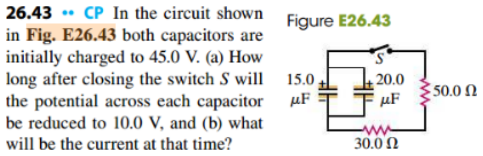
Open the original D2L handout 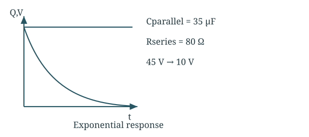
Combine capacitance in parallel and resistance in series.
Combine the circuit C = 15.0 + 20.0 = 35.0 μ F R = 50.0 + 30.0 = 80.0 Ω τ = R C = ( 80.0 ) ( 35.0 × 10 − 6 ) = 2.80 × 10 − 3 s \begin{gathered}C=15.0+20.0=35.0\ \mu\mathrm F\\R=50.0+30.0=80.0\ \Omega\\\tau=RC=(80.0)(35.0\times10^{-6})=2.80\times10^{-3}\ \mathrm s\end{gathered} C = 15.0 + 20.0 = 35.0 μ F R = 50.0 + 30.0 = 80.0 Ω τ = R C = ( 80.0 ) ( 35.0 × 1 0 − 6 ) = 2.80 × 1 0 − 3 s Find time and current at 10 V 10.0 = 45.0 e − t / τ t = τ ln 45.0 10.0 = ( 2.80 m s ) ln 4.50 = 4.21 m s I = V / R = 10.0 / 80.0 = 0.125 A \begin{gathered}10.0=45.0e^{-t/\tau}\\t=\tau\ln\frac{45.0}{10.0}=(2.80\ \mathrm{ms})\ln4.50=4.21\ \mathrm{ms}\\I=V/R=10.0/80.0=0.125\ \mathrm A\end{gathered} 10.0 = 45.0 e − t / τ t = τ ln 10.0 45.0 = ( 2.80 ms ) ln 4.50 = 4.21 ms I = V / R = 10.0/80.0 = 0.125 A Final answer 4.21 ms; 0.125 A.
Both capacitors always have the same voltage; discharge current flows from their positive terminals through the resistors.
Question 926.51 · Charging curve determines R Uncharged C = 5.90 µF charges through R from a 28.0 V ideal source. At t = 3.00 ms, Q = 110 µC. Find final charge, resistance and time to 99% charge.
Original question 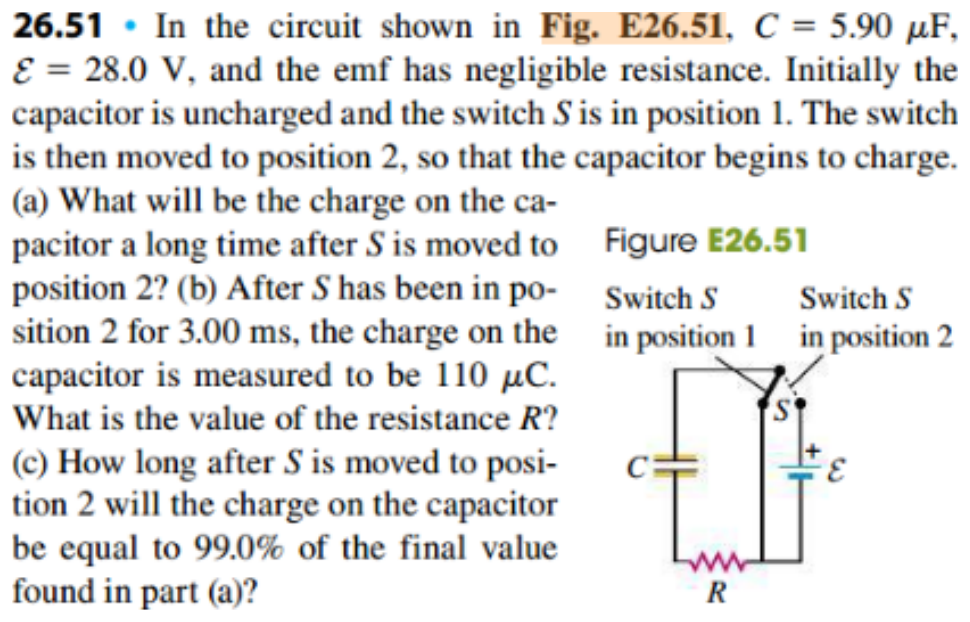
Open the original D2L handout Invert the charging exponential using the remaining uncharged fraction.
Find final charge Q ∞ = C E = ( 5.90 μ F ) ( 28.0 V ) = 165.2 μ C \begin{gathered}Q_\infty=C\mathcal E=(5.90\ \mu\mathrm F)(28.0\ \mathrm V)=165.2\ \mu\mathrm C\end{gathered} Q ∞ = C E = ( 5.90 μ F ) ( 28.0 V ) = 165.2 μ C Solve for the resistance Q = Q ∞ ( 1 − e − t / R C ) R C = − t ln ( 1 − Q / Q ∞ ) = − 0.00300 ln ( 1 − 110 / 165.2 ) τ = 2.7367 × 10 − 3 s R = τ C = 2.7367 × 10 − 3 5.90 × 10 − 6 = 464 Ω \begin{gathered}Q=Q_\infty(1-e^{-t/RC})\\RC=\frac{-t}{\ln(1-Q/Q_\infty)}=\frac{-0.00300}{\ln(1-110/165.2)}\\\tau=2.7367\times10^{-3}\ \mathrm s\\R=\frac\tau C=\frac{2.7367\times10^{-3}}{5.90\times10^{-6}}=464\ \Omega\end{gathered} Q = Q ∞ ( 1 − e − t / R C ) R C = ln ( 1 − Q / Q ∞ ) − t = ln ( 1 − 110/165.2 ) − 0.00300 τ = 2.7367 × 1 0 − 3 s R = C τ = 5.90 × 1 0 − 6 2.7367 × 1 0 − 3 = 464 Ω Find the 99% time 0.99 = 1 − e − t / τ ⇒ e − t / τ = 0.01 t = − τ ln 0.01 = ( 2.7367 m s ) ln 100 = 12.6 m s \begin{gathered}0.99=1-e^{-t/\tau}\quad\Rightarrow\quad e^{-t/\tau}=0.01\\t=-\tau\ln0.01=(2.7367\ \mathrm{ms})\ln100=12.6\ \mathrm{ms}\end{gathered} 0.99 = 1 − e − t / τ ⇒ e − t / τ = 0.01 t = − τ ln 0.01 = ( 2.7367 ms ) ln 100 = 12.6 ms Final answer 165.2 µC; 464 Ω; 12.6 ms.
99% charge takes 4.605 time constants; it never reaches exactly 100% in the ideal model.
Question 1025.59 · Supplement: tapered resistor A truncated cone of height h has end radii r₁ and r₂ and uniform resistivity ρ. Current travels along its axis. Find resistance using thin slices; check the cylinder limit.
Original question 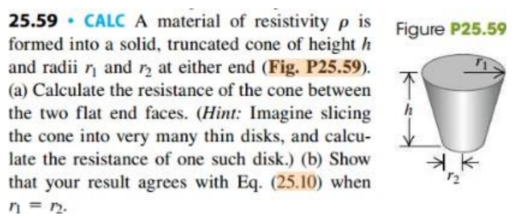
Open the original D2L handout 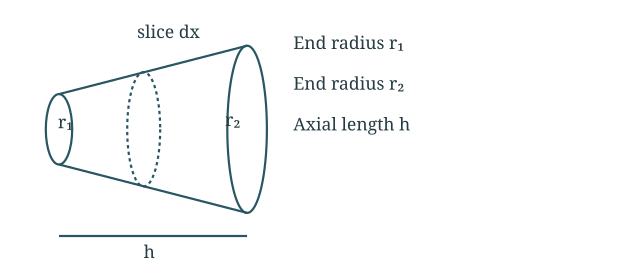
Slices across the axis carry the same current, so their resistances add in series.
Write a thin-slice resistance r ( x ) = r 1 + r 2 − r 1 h x d R = ρ d x π [ r ( x ) ] 2 \begin{gathered}r(x)=r_1+\frac{r_2-r_1}{h}x\\dR=\frac{\rho\,dx}{\pi[r(x)]^2}\end{gathered} r ( x ) = r 1 + h r 2 − r 1 x d R = π [ r ( x ) ] 2 ρ d x Integrate the slices in series R = ρ π ∫ 0 h d x [ r 1 + ( r 2 − r 1 ) x / h ] 2 u = r 1 + ( r 2 − r 1 ) x / h , d x = h r 2 − r 1 d u R = ρ h π ( r 2 − r 1 ) ∫ r 1 r 2 u − 2 d u = ρ h π ( r 2 − r 1 ) ( 1 r 1 − 1 r 2 ) = ρ h π r 1 r 2 \begin{gathered}R=\frac\rho\pi\int_0^h\frac{dx}{[r_1+(r_2-r_1)x/h]^2}\\u=r_1+(r_2-r_1)x/h,\quad dx=\frac h{r_2-r_1}du\\R=\frac{\rho h}{\pi(r_2-r_1)}\int_{r_1}^{r_2}u^{-2}\,du\\=\frac{\rho h}{\pi(r_2-r_1)}\left(\frac1{r_1}-\frac1{r_2}\right)=\frac{\rho h}{\pi r_1r_2}\end{gathered} R = π ρ ∫ 0 h [ r 1 + ( r 2 − r 1 ) x / h ] 2 d x u = r 1 + ( r 2 − r 1 ) x / h , d x = r 2 − r 1 h d u R = π ( r 2 − r 1 ) ρ h ∫ r 1 r 2 u − 2 d u = π ( r 2 − r 1 ) ρ h ( r 1 1 − r 2 1 ) = π r 1 r 2 ρ h Check equal radii r 1 = r 2 = r ⇒ R = ρ h π r 2 = ρ h A \begin{gathered}r_1=r_2=r\quad\Rightarrow\quad R=\frac{\rho h}{\pi r^2}=\frac{\rho h}{A}\end{gathered} r 1 = r 2 = r ⇒ R = π r 2 ρ h = A ρ h Final answer R = ρh/(πr₁r₂).
When r₁ = r₂ = r, the limit is ρh/(πr²). This uses the thin-slice axial-current model requested by the problem.